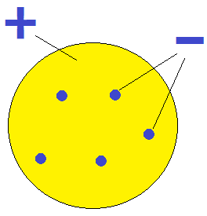

Science 10 (Chemistry Lesson )
Atoms
Democritus (c. 400 BCE) proposed that if a pure substance were divided into smaller and smaller pieces,
eventually we would arrive at something so small it could be divided no further.
- The smallest piece of a pure substance is called an atom.
- The word atom comes from the Greek word ἄτομον, for indivisible or uncuttable.
Billiard Ball Model
John Dalton (1808) proposed the first modern model of the atom.
- Atoms are the smallest (indivisible) particle of all matter.
- Atoms of the same element have the same size and mass.
- Different elements have atoms of different size and mass.
- In Dalton’s model, atoms have no internal parts; they are featureless spheres (like a billiard ball).
- Compounds are created when atoms of different elements join together in definite proportions (e.g. H2O).
- Dalton’s model explains why chemical reactions occur in definite proportions; running electricity through water creates hydrogen and oxygen in a 2:1 ratio.
- Dalton’s model also explains thermal properties of matter such as pressure and temperature.
- The Billiard Ball model does not explain the electrical properties of matter.
- Matter has positive and negative parts.
Raisin Bun Model
J.J. Thomson performed experiments (1897) to see how positive and negative matter were affected by electric and magnetic forces. He concluded:
- The negative parts of matter have much smaller mass than the positive parts.
- The mass of the positive parts depends on the element (same as Dalton’s model).
- The mass of the negative parts will always be the same, regardless of which element the negative part came from!
- These negative parts, common to all elements, are called electrons.
Thomson (1904) proposed the Raisin Bun or Plum Pudding model.

- The “bun” is a sphere containing most of the atom’s mass.
- Like the Billiard Ball model, the size and mass of the atom differ from one element to another.
- There are electrons (“raisins”) embedded in the atom (“bun”) that have a very small mass and a negative charge.
- Different elements have differing numbers of electrons, but the electrons all have the same properties regardless of which element they come from.
Planetary (Nuclear) Model
Ernest Rutherford and his students performed an experiment (1909) where they fired small, high-speed, positive particles at a thin gold foil. (Gold is a large atom.)
- Most of these “alpha” particles passed through the gold foil with nearly no effect.
- A very small percentage of the alpha particles were deflected by the gold foil to very large angles.
- Rutherford concluded that the Raisin Bun model could not explain these results.
Rutherford proposed a new model called the Planetary Model (also called the “solar system” or “nuclear” model.)

- Most of the atom is empty space, since the alpha particles were unaffected.
- Most of the atom’s mass is concentrated in a tiny nucleus, which cause some of the alpha particles to deflect.
- The electrons orbit around the nucleus like the planets orbiting the Sun.
- To account for measurements of atomic mass and charge, the nucleus must contain two kinds of particle...
- Protons have a positive charge.
- Neutrons have no charge.
- Protons and neutrons have nearly the same mass.
- The nucleus has a diameter of about \(\mathrm{10^{-14}\ m}\) depending on the element.
- The electron orbits have diameters on the order of \(\mathrm{10^{-10}\ m}\).